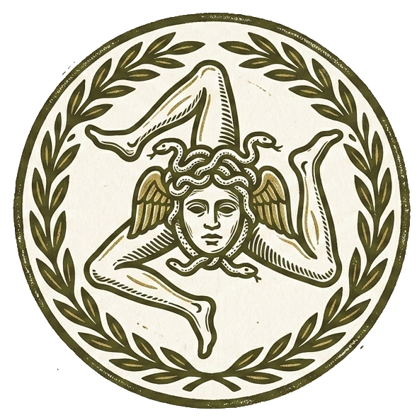
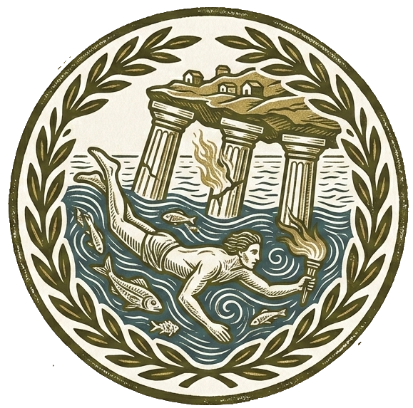
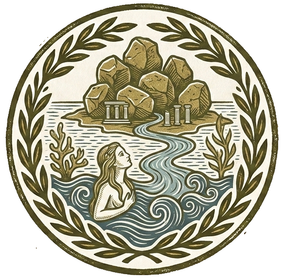
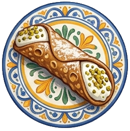
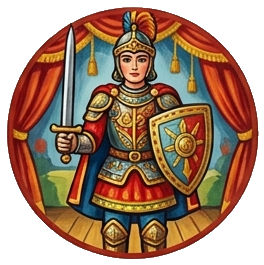

Storia e Miti
Arte e Cultura
La Trinacria: Simbolo e Mito della Sicilia
La Trinacria è il simbolo antico e inconfondibile della Sicilia. Il suo nome deriva dal greco Treis (tre) e Akre (promontori), in riferimento alla forma triangolare dell'isola e ai suoi tre capi geografici: Capo Peloro (Messina), Capo Passero (Siracusa) e Capo Lilibeo (Marsala).
Al centro del simbolo si trova il volto di una Gorgone (la Medusa mitologica), arricchito da due ali che rappresentano l'intelligenza e da serpenti intrecciati a spighe di grano. Mentre i serpenti indicano la saggezza e la protezione contro i mali, le spighe di grano furono aggiunte dai Romani per celebrare la Sicilia come l'antico "granaio di Roma".
Le tre gambe piegate (chiamate triskelion) rappresentano il movimento del tempo, il ciclo della vita e la forza della natura che sorregge l'isola in mezzo al Mediterraneo.

La Leggenda di Colapesce
Nicola, detto Colapesce per la sua straordinaria abilità nel nuotare, era un giovane messinese che trascorreva le sue giornate in fondo al mare. La sua fama giunse fino al re Federico II, che volle metterlo alla prova sfidandolo a recuperare oggetti sempre più profondi.
Durante la sua ultima immersione nello Stretto di Messina, Colapesce fece una scoperta terribile: la Sicilia si reggeva su tre grandi colonne, e una di queste era gravemente danneggiata dal fuoco e rischiava di crollare, inghiottendo l'isola.
Minto da un profondo amore per la sua terra, il giovane decise di restare negli abissi per sostituirsi alla colonna crepata. Si dice che Colapesce sia ancora lì sotto a sorreggere la Sicilia e che, quando la terra trema, sia soltanto lui che si sposta da una spalla all'altra per riposarsi.

La Mitologia: Il Mito di Aci e Galatea
La mitologica storia d'amore tra il giovane pastore Aci e la bellissima ninfa del mare Galatea nacque lungo le coste orientali della Sicilia. Il loro legame suscitò però la tremenda gelosia del ciclope Polifemo, anch'egli innamorato della ninfa.
Scoperti i due amanti, Polifemo, in preda alla rabbia, scagliò un enorme masso di lava contro il giovane Aci, schiacciandolo e uccidendolo all'istante.
Distrutta dal dolore, Galatea implorò gli dei di restituire la vita al suo amato. Gli dei trasformarono così il sangue di Aci in un fiume limpido che nasce dall'Etna e sfocia in mare, permettendo ai due amanti di riabbracciarsi per l'eternità ad ogni incontro tra il fiume e l'onda.

Dolci Tipici: Il Cannolo Siciliano
Il cannolo è il re indiscusso della pasticceria siciliana. La sua origine risale all'epoca della dominazione araba: si racconta che le donne dell'harem del castello delle Donne di Caltanissetta abbiano inventato per prime la ricetta, rielaborando un antico dolce romano a forma di tubo a base di farina, latte e miele.
Ingredienti principali:
- Per la scorza: Farina, strutto, zucchero, vino Marsala e un pizzico di cacao.
- Per il ripieno: Ricotta di pecora fresca, zucchero a velo, gocce di cioccolato e scorzette d'arancia candite.
Preparazione:
- Impasta gli ingredienti della scorza, stendi la sfoglia sottile e avvolgila sui tubi metallici.
- Friggi le scorze nello strutto bollente finché non diventano dorate e croccanti.
- Lavora la ricotta di pecora con lo zucchero, setacciala e aggiungi le gocce di cioccolato.
- Farcisci i cannoli solo prima di servirli e guarnisci le estremità con granella di pistacchio o canditi.

L'Opera dei Pupi e la Storia di Orlando
L'Opera dei Pupi è il tradizionale teatro delle marionette siciliane, riconosciuto dall'UNESCO come capolavoro del patrimonio immateriale dell'umanità. Nata nell'Ottocento, quest'arte combina la sapiente maestria artigianale dei costruttori di armature e pupi con la passione dei "pupari", i cantastorie che danno voce alle rappresentazioni.
Le vicende narrate si basano sui poemi cavallereschi medievali, in particolare sull'Orlando Furioso di Ludovico Ariosto. La storia racconta le gesta del valoroso paladino Orlando, condottiero dei Franchi, e della sua disperata passione per la bella principessa Angelica.
Quando Angelica si innamora del fante saraceno Medoro, Orlando perde completamente il senno per la gelosia e la sofferenza. Sarà il fedele astolfo a intraprendere un viaggio incredibile fino alla Luna in sella all'Ippogrifo per recuperare il senno perduto di Orlando racchiuso in un'ampolla, permettendo al paladino di tornare a combattere.

Canzoni Popolari:
Ciuri, Ciuri nata come uno stornello popolare trasmesso oralmente di generazione in generazione, Ciuri Ciuri (che significa "Fiori, fiori") è un inno di gioia, ironia e serenità. Il testo gioca sul contrasto tra le bellezze della natura e le piccole pene d'amore, celebrate con il ritmo inconfondibile del marranzano e della fisarmonica.
Ciuri ciuri ciuri di tuttu l'annu,
l'amuri ca mi rasti ti lu tornu.
La la la la... La la la.
Ciuri di gelsuminu rampicanti
siddu passannu cantari mi senti,
'nun cantu né 'pe ammuri né p'amanti
ma cantu pi sturnarimi la menti.